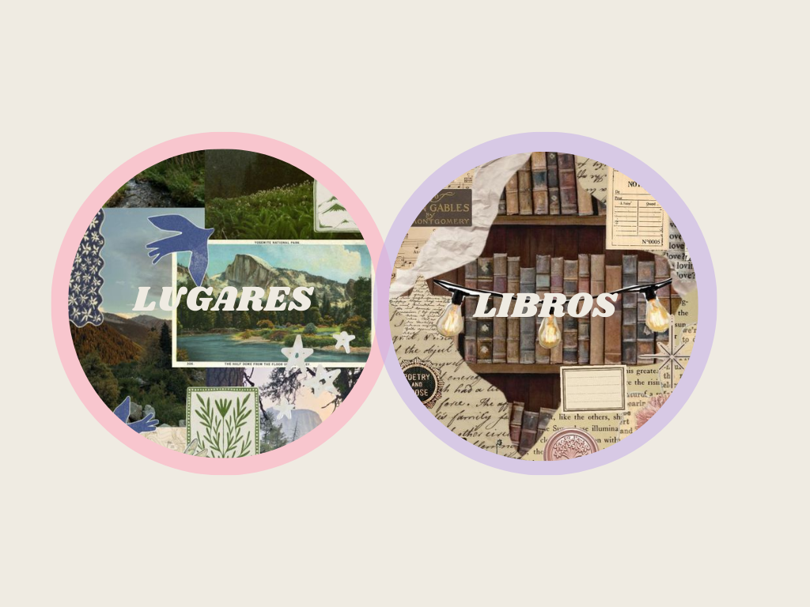

Sobre mí:
Soy estudiante de la Universidad de las Fuerzas Armadas ESPE, en la carrera de Ingeniería de Software.
Acerca de mi Universidad y Carrera:
Te contare un poco acerca de quien soy y de las cosas que me gustan
Soy estudiante de la Universidad de las Fuerzas Armadas ESPE, en la carrera de Ingeniería de Software.
Acerca de mi Universidad y Carrera:
Me gusta mucho la programación y aprender cosas nuevas.
De hecho aqui estan algunas de las cosas que he hecho a lo largo de un tiempo:
Me gusta mucho la música, el arte y la naturaleza.
Esta es mi canción favorita:
Además aqui estan algunas de mis playlist favoritas:
Me gusta mucho la fotografía y la lectura.
Estos son algunas de las recomendaciones de libros y lugares que me parecen interesantes
Haz click en la imagen para ver más detalles.

Me gusta mucho la tecnología y la ciencia.
Me gusta mucho la cocina y la gastronomía.
Puedes encontrar a Kerlly a traves de estos sitios:
Paint by holding down the mouse button and moving it. Download my painting
{kind=link}